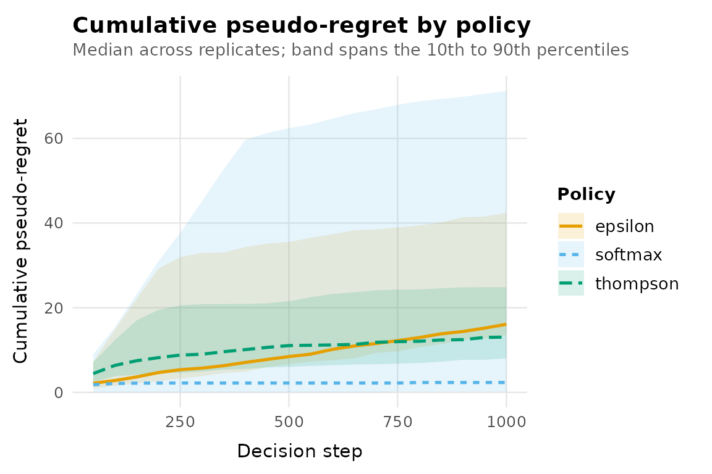

banditlab’s engine drives every policy through three S3 generics. If you can write those three functions, you can run any policy from any research paper against the built-in environments, replicate it, and compare it with the built-in policies. Nothing in the package needs to be modified.
The lifecycle:
-
policy_state(policy, arms)initialises runtime state once per replicate (and is the reset). -
select_arm(policy, t)picks an arm at stept. -
update_state(policy, arm, reward, t)incorporates the observed reward.
This vignette implements Boltzmann (softmax) exploration from
scratch: arms are selected with probability proportional to
exp(estimate / temperature).
1. The constructor: configuration only
The constructor validates and stores configuration. It knows nothing about arms or environments, which is what lets one configuration run against any environment.
policy_softmax <- function(temperature = 0.1) {
stopifnot(
is.numeric(temperature),
length(temperature) == 1,
is.finite(temperature),
temperature > 0
)
structure(
list(temperature = temperature),
class = c("softmax_policy", "bandit_policy")
)
}The class vector matters: your class first,
"bandit_policy" last.
2. State initialisation
policy_state() receives the arm names from the
environment and must return the policy with any state fields added.
Because it can be called repeatedly, always build the state from scratch
here.
3. Selection
select_arm() must return a list with arm.
Returning propensity, the marginal probability of the
selected arm, is optional but strongly recommended: it is what makes the
resulting logs usable for importance-weighted offline evaluation.
Softmax makes this easy because the selection probabilities are
explicit.
select_arm.softmax_policy <- function(policy, t, ...) {
estimates <- ifelse(
policy$pulls > 0,
policy$reward_sum / pmax(policy$pulls, 1),
0
)
centred <- (estimates - max(estimates)) / policy$temperature
probabilities <- exp(centred) / sum(exp(centred))
index <- sample.int(length(policy$arms), 1, prob = probabilities)
list(
arm = policy$arms[[index]],
propensity = probabilities[[index]],
reason = "softmax"
)
}Two details worth copying: subtracting the maximum before
exponentiating keeps the calculation numerically stable, and all
randomness comes from the current RNG (never call
set.seed() inside a method, or you break the engine’s
reproducibility guarantees).
4. Update
update_state.softmax_policy <- function(policy, arm, reward, t, ...) {
policy$pulls[[arm]] <- policy$pulls[[arm]] + 1L
policy$reward_sum[[arm]] <- policy$reward_sum[[arm]] + reward
policy
}5. Make the methods visible to the engine
In an ordinary script or inside your own package, S3 dispatch finds these methods automatically and this step is unnecessary. Inside knitr documents (like this vignette) and testthat tests, method lookup cannot see them, so register them explicitly:
registerS3method("policy_state", "softmax_policy", policy_state.softmax_policy)
registerS3method("select_arm", "softmax_policy", select_arm.softmax_policy)
registerS3method("update_state", "softmax_policy", update_state.softmax_policy)6. Run it like any built-in policy
env <- bandit_bernoulli(c(low = 0.15, mid = 0.25, high = 0.40))
result <- run_experiment(
env,
policies = list(
softmax = policy_softmax(temperature = 0.05),
epsilon = policy_epsilon_greedy(0.1),
thompson = policy_thompson()
),
horizon = 1000,
replications = 50,
seed = 7,
checkpoints = seq(50, 1000, by = 50)
)
summary(result)
#> # A tibble: 3 × 8
#> policy replications mean_regret median_regret regret_q025 regret_q975
#> * <chr> <int> <dbl> <dbl> <dbl> <dbl>
#> 1 softmax 50 24.6 2.33 0 163.
#> 2 epsilon 50 25.4 16.1 10.9 115.
#> 3 thompson 50 16.6 13.0 7.27 51.1
#> # ℹ 2 more variables: mean_reward <dbl>, mean_optimal_share <dbl>
autoplot(result, metric = "cumulative_regret")
Seed-paired comparison against a built-in baseline works unchanged:
cmp <- compare_policies(result, baseline = "epsilon")
aggregate(difference ~ policy, data = cmp, FUN = mean)
#> policy difference
#> 1 softmax -0.801
#> 2 thompson -8.855Validation checklist for your own policy
Before trusting a new policy implementation:
- Run it on
bandit_bernoulli(c(a = 0, b = 1)): it should concentrate on armbquickly, and its cumulative regret should flatten. - Check
policy_state()twice: the second state must be fresh. - Check reproducibility: two runs with the same seed must be identical.
- If you log propensities, verify them: over many selections from a frozen state, each arm’s empirical selection frequency should match its logged propensity.
The package’s own test suite applies exactly these checks to the built-in policies; applying them to yours puts it on the same footing.